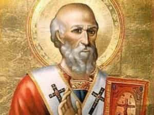
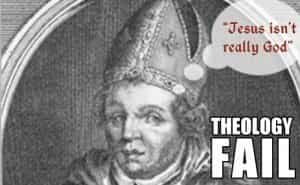
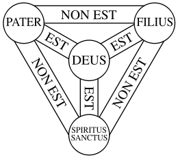

< < < Back
One Man Can Change The World – Return Of Kings
Athanasius of Alexandria (296-98? – 373) is held in esteem by all Christian churches. His stout defense of the dogma of the Holy Trinity earned him the title of “The Father of Orthodoxy.” To this day, the Roman Catholic and Orthodox Churches venerate him as a saint.
Athanasius’s career took place in a time when most of the Christian world was consumed by heresy, with many bishops and priests teaching rank error. The Roman government sided with the heretics and Athanasius was surrounded by a world that despised and persecuted him for holding to the truth.
For that reason, his life and character offer lessons for the 21st century man who is similarly immersed in heresy, whether he counts himself a believing Christian or not.
The Man

Little is known of Athanasius’s early life. Historians speculate that he was born in to a noble family that could afford him the education he displayed in his eloquent letters. Tradition holds that Bishop Alexander of Alexandria noticed that the boy Athanasius and his friends were play-acting as priests celebrating the sacraments.
Alexander declared that the baptisms they administered were in fact valid and encouraged them to pursue priestly vocations. Athanasius proved an apt pupil, writing the great treatises On The Incarnation and Against The Gentiles at age 20. After being ordained a deacon, Athanasius became a secretary and adviser to the bishop, accompanying him to the first ecumenical council in Christian history at Nicaea in 325. It was there Athanasius began the great struggle of his life.
The Heretic

The priest Arius (250-256? – 336) was of Libyan and possibly Berber origin. Reconstructing his life and teachings is difficult as all of his original writings were suppressed and they only survive in quotations by hostile orthodox critics. Essentially, Arius taught that Jesus Christ was only figuratively the Son of God.
According to Arianism, Christ was the greatest of God’s creations but there was a time when he did not exist and only God the Father existed. The First Council of Nicaea was called by the Emperor Constantine to resolve the disputes between the Arians and the orthodox position, which were shaking the entire Christian Church, then the official religion of the Roman Empire.
The council coined the term homoousios as a way to explain that Jesus Christ is God the Son and of one substance with God the Father, the watchword of orthodoxy ever since. Although Arianism was formally condemned, the struggle was not over.
Heretics Always Lie

The more things change…
After his patron Alexander died, Athanasius was named his successor as Bishop of Alexandria by popular acclaim, a position he would hold for the next 47 years. He learned that the strength of Arianism was not in its philosophical or theological reasoning, but in its political influence.
Athanasius was banished into exile on five occasions by four different Roman emperors. The Arians worked mightily to manufacture charges against Athanasius to publicly shame him, which should sound familiar to veterans of the manosphere. At the council of Tyre in 335, Arian bishops bribed a harlot to accuse Athanasius of immorality. One quick thinking priest stood up and said, “Do you really mean to accuse me of this?” She replied, “Of course,” proving that she had no idea what Athanasius actually looked like.
The bishop was accused of murdering and amputating the hand of Bishop Arsenius of Hypsele for use in black magic rituals. Athanasius calmly introduced the bishop to the council, alive and intact, sardonically commenting, “You see, he has two hands. Where is the third which I cut off? God has created men with two hands only.”
Rome’s Most Wanted
The tl;dr version of orthodox theology
Athanasius spent 17 years of his bishopric in exile, evading the authorities and continuing to preach the orthodox position in defiance of their heresy. The secular modern reader may dismiss these disputes as mere theological hair splitting, but to the Christians of the time these issues were of paramount importance, which would determine doctrines of salvation.
Bishop contended against bishop, and orthodox lay people were frequently evicted from their own churches. Christian readers in the 21st century can surely sympathize as we often contend with Churchianity, the faith infected with feminism. Athanasius wrote to his people:
May God console you! … What saddens you … is the fact that others have occupied the churches by violence, while during this time you are on the outside. It is a fact that they have the premises – but you have the Apostolic Faith. They can occupy our churches, but they are outside the true Faith. You remain outside the places of worship, but the Faith dwells within you. Let us consider: what is more important, the place or the Faith? The true Faith, obviously. Who has lost and who has won in the struggle – the one who keeps the premises or the one who keeps the Faith? True, the premises are good when the Apostolic Faith is preached there; they are holy if everything takes place there in a holy way …
The Lessons
During his life, the bishop was nicknamed “Athanasius Contra Mundum:” Athanasius against the world. In a splendid way, he demonstrated the virtues of courage and fortitude. He challenged the reigning heresy of his day, enduring unpopularity among society’s elite, unjust exiles from his position as bishop, slanders and libels against his character, and threats against his life from the government.
Rather than indulge in self-pity, Athanasius spent his time in exile continuing to preach and write treatises in defense of the truth. The common people of his diocese loved him until the end for his holiness and commitment to teaching true doctrine. Cardinal John Henry Newman wrote that Athanasius, after the Apostles, was the most responsible for ensuring the orthodox Christian faith was passed down to subsequent generations.
He was willing to pay the price for holding to the truth. All men should similarly be willing to go to the wall in defense of the truth, no matter if the whole world stands against him.
Read More: The One Change Facebook Can Make To Create A Better World


{kind=link}
{kind=link}
{kind=link}